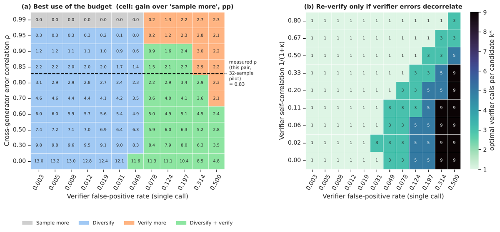
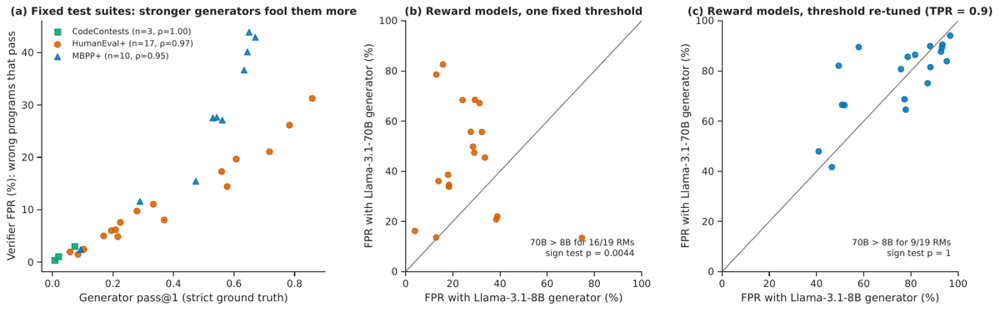
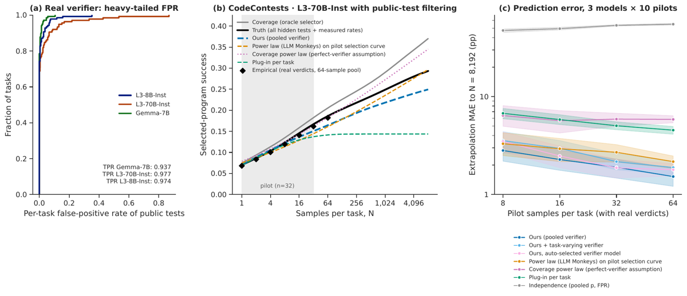

TL;DR — l'allocation optimale d'un budget de compute d'inférence n'est pas une loi d'échelle mais une décision, et cette décision se déduit d'un petit pilote labellisé via une formule exacte de la probabilité de soumettre une bonne réponse sous vérifieur imparfait ; le papier mesure les taux d'erreur de six familles de vérifieurs réels et montre que chaque règle de pouce (« le modèle le plus fort », « plus de juges », « seuil fixe », les exposants compute-optimal de Singhi) perd ≥ 2,5 points dans au moins un réglage.
Claim principal, formulé précisément : avec un budget par tâche B, le choix conjoint (générateurs × poids de mélange, nombre n_m d'échantillons, nombre k d'appels au vérifieur ou seuil d'acceptation) qui maximise la prédiction de l'Éq. (1) sous un pilote de 32 échantillons sur 50 % des tâches arrive à 0,02–0,82 pp du meilleur point de la grille a posteriori, sur les 50 % de tâches jamais vues [Tab. 2, Tab. 3].
Pourquoi il compte ici : c'est le seul papier du corpus qui rende le plan de dépense fonction explicite des paramètres du vérifieur (τ, f, κ_c, κ_w) plutôt que l'inverse. Et il mesure, sur vérifieurs réels, les trois quantités dont nous n'avons aucune estimation juridique.
⚠️ Limite de cadrage, à poser d'emblée : aucun entraînement, aucun RL, politique figée. La dépendance d'erreur que SPLIT modélise est erreur↔difficulté-de-tâche et erreur↔candidat, pas erreur↔stratégie-de-la-politique. Les auteurs le disent : « Dependence among candidates within a task, such as duplicated or near-duplicated answers, is not modelled and may bias SPLIT, especially at large N. The verifier propensity models repeated calls on one candidate, not correlated candidates » [§6, Limitations, « Theory »]. C'est exactement le régime que GRPO crée.
→ Réponses à la mission de vérification (a)(b)(c) : §10, en fin de mémo.
Origine : zéro génération. Cinq releases publiques tierces, ré-exploitées [Tab. 1, App. F « Data sources »] :
| Benchmark | Tâches | Échantillons/tâche | Générateurs | Vérifieur(s) | Release |
|---|---|---|---|---|---|
| MATH | 128 | 10 000 | 5 (Llama-3 8B/70B, Gemma 2B/7B) | simulé (τ, f, κ contrôlés) ; vote majoritaire réel | Large Language Monkeys |
| CodeContests | 140 | 10 000 | 3 (L3-8B/70B-Inst., Gemma-7B) | simulé ; tests publics (80 403 programmes exécutés) | Large Language Monkeys |
| HumanEval | 164 | 50–1 000 | 17 (CodeGen-6B → GPT-4o) | tests de base ; vérité = HumanEval+ | release de stroebl2024limits |
| MBPP | 399 | 20–50 | 10 | tests de base ; vérité = MBPP+ | release de stroebl2024limits |
| MATH-500 / GPQA | 500 / 646 | 100 | Llama-3.1-70B-Inst. (+8B) | 8 juges LLM (juge tiré au hasard par appel, majorité de k) ; 19 reward models ; score Weaver | Weaver |
| SWE-Bench Verified (rollouts) | 492 | 22 | agent R2E-Gym 32B | vérifieur de patch LLM P(yes) : seuils ou argmax |
R2E-Gym |
| SWE-Bench Verified (pool) | 500 | 1 par système | 175 systèmes soumis | aucun — coverage seul | SWE-bench experiments repo |
resolved par instance des 175 systèmes.n.a. au sens RL. Ce qui en tient lieu est un planner et un espace de configurations, et c'est ça qu'il faut lire comme un harness de décision.
Espace de configurations [§4, « Planner » ; §5, « Protocols »] :
- générateurs seuls et paires avec poids de mélange w_m ∈ {¼, ½, ¾} ;
- k ∈ {1, 3, 5, 9} appels au vérifieur ;
- pour SWE-bench, seuils d'acceptation {aucun, 0,3, 0,5, 0,7} pour N ∈ {1,2,4,8,16} ;
- budgets par tâche B = 4–256 unités de coût (sampling) ou 16–1 024 (juges).
- Taille de grille effectivement rapportée : |C| = 140 (MATH simulé), 48 (CodeContests simulé), 13 (CodeContests tests réels) [Tab. 10].
Contrainte de budget, recopiée [§4] :
n_m = ⌊ w_m · B / (c_m + k · c_v) ⌋
c_m = coût de génération du modèle m, c_v = coût d'un appel vérifieur. Donc le budget de vérification est prélevé sur le budget de génération, tâche par tâche.
Modèles de coût [§4] : proxy nombre de paramètres (un échantillon 8B coûte 1) ; compute-matched = paramètres × tokens de sortie mesurés, normalisé à Llama-3-8B-Instruct ; et une famille à un paramètre (paramètres)^γ × tokens de sortie avec γ=1 (compute), γ≈0,7 (prix au token sous-linéaire en taille), γ≈0,5 (latence de décode avec plus d'accélérateurs), γ=0 (prix plat au token). Un appel de juge coûte une génération ; l'exécution de tests coûte zéro ; un appel de vérifieur simulé coûte 0,25.
Sélecteurs modélisés (deux, et c'est une bonne couverture) : 1. uniform-among-accepted — tire uniformément parmi les candidats acceptés, abstention comptée comme échec si aucun n'est accepté ; 2. argmax — soumet le candidat de score vérifieur maximal.
Horizon / multi-turn / contexte long / compaction : hors sujet par construction — le harness agentique est celui des releases tierces, SPLIT ne voit que (correct?, accepté?, score) par rollout. Rien sur la compaction, les timeouts, le parsing d'appels d'outils, les épisodes sans verdict. Pour les contrôles d'infra de la grille maison : tous n.a., sauf un — l'abstention est explicitement traitée (comptée échec), ce qui est le bon choix et plus que ce que fait la moyenne du corpus.
Infra réelle : « All experiments run on a single 8-core laptop CPU. Executing the CodeContests programs takes about 1.5 hours; the remaining experiments take roughly 5–8 hours in total. No GPU or model API is used » [App. F]. Quadrature de l'intégrale multi-générateurs : trapèzes log-espacés à 480 nœuds, accord Monte-Carlo à 3×10⁻³ [App. A].
C'est le cœur. Le vérifieur n'est pas conçu ici : il est pris comme donné, ses erreurs sont mesurées, et la décision de budget en est déduite. « That work builds better verifiers. We take a verifier as given, measure its errors, and decide how much to rely on it » [§2].
[§3, « Setting »] :
p_{t,m} = P(un échantillon de m est correct sur la tâche t)
τ_t = TPR = P(accepter | correct) ⇒ FNR = 1 − τ_t
f_t = FPR = P(accepter | faux)
a = τ p (accepté ET correct)
s = a + f(1−p) (accepté)
C_N = 1 − (1−p)^N (coverage)
Estimation séparée, explicite [App. B] : « Each task's TPR is observed through its correct samples and its FPR through its wrong ones. » Le modèle pooled estime τ par la fraction acceptée des échantillons corrects du pilote et un prior bêta sur les f_t par max de vraisemblance bêta-binomiale sur les acceptations des échantillons faux. ✓ C'est exactement la case que la grille maison exige et que le champ confond.
S = ∫₀¹ Σ_m n_m a_m (1 − s_m u)^{n_m−1} ∏_{l≠m} (1 − s_l u)^{n_l} du (Éq. 1)
Un seul générateur, s > 0 : S_N = (a/s)·(1 − (1−s)^N)
↗ monotone en N, limite = (a/s) = PLAFOND DE PRÉCISION
Décomposition : (probabilité que quelque chose soit accepté) × (précision de l'acceptation). Preuve par temps d'arrivée uniformes indépendants [App. A].
Régimes de convergence [Prop. 5, App. A] — c'est la partie budgétaire :
- si f_t ≥ f₀ > 0 sur toutes les tâches : 0 ≤ S_∞ − S_N ≤ S_∞ (1−min(τ,f₀))^N ≤ S_∞ e^{−N·min(τ,f₀)} → saturation exponentielle ; le compute supplémentaire est perdu presque immédiatement ;
- si P(f_t ≤ x) ≤ K x^{a_f} (masse près de zéro) : S_∞ − S_N ≤ (1−τ)^N + K Γ(a_f+1) N^{−a_f} + e^{−N x₀} → saturation seulement polynomiale ;
- coverage seul : 1 − E[C_N] ~ c Γ(α) N^{−α} si la densité de p se comporte en c p^{α−1} près de 0 ;
- et la borne qui donne l'intuition de budget : 0 ≤ E[1−(1−τp)^N] − S_N ≤ N·E[f_t]. ⇒ les petits budgets se comportent comme si le vérifieur était parfait, les grands tapent le plafond. Le point de bascule est en N ≈ 1/E[f_t].
Modèle : chaque candidat c a une propension q_c ; conditionnellement à q_c, les appels sont i.i.d. Bernoulli(q_c), avec q ~ D_c (corrects) et q ~ D_w (faux). Majorité de k impair : T_k = E_{D_c}[B_k(q)], F_k = E_{D_w}[B_k(q)].
k appels ABAISSENT le plafond de précision par rapport à 1 appel ⟺ F_k/F_1 > T_k/T_1 (Éq. 2)
« A larger FPR (F_k > F_1) alone is not sufficient. » Contre-exemple analytique fourni : D_w = 0,4·δ_{0,05} + 0,6·δ_{0,75} ⇒ F_1 = 0,47, F_∞ = 0,6 ; avec D_c = δ_{0,6} le plafond monte de 0,460 à 0,526 bien que F_∞ > F_1 [App. A].
En pratique D_c, D_w sont des bêtas de moyennes τ, f et de concentration κ (κ→∞ : appels indépendants ; κ→0 : chaque appel répète le premier). Concentrations ajustées séparément pour corrects et faux [App. B] — valeurs typiques : κ_c ≈ 2,5, κ_w ≈ 14 sur MATH-500 ; κ_c ≈ 4, κ_w ≈ 60–270 sur GPQA.
(a) H atomless : P_N = N p · E_{Y~G_c}[ H(Y)^{N−1} ], H = p G_c + (1−p) G_w
(b) binné : P_N = Σ_b (R_b^N − R_{b−1}^N) · r_c[b]/r[b]
(c) P_N → précision du bin occupé le plus haut (ou limite L de la précision locale η(y) en haut du support)
⇒ argmax remplace la précision moyenne a/s parmi les acceptés par la précision locale en haut de la distribution de scores. « Which one is larger is an empirical question. It depends on the upper tails of G_c and G_w. » Honnête, et c'est le point où leur estimateur est le plus fragile (cf. §7).
| Vérifieur (réel) | FP mesuré | FN mesuré | Dénominateur | Source |
|---|---|---|---|---|
| Vote majoritaire (MATH, L3-8B-Inst) | — (plafonne à ≈ 43 % de succès vérifié quand le coverage atteint 98 %) | — | 128 tâches × jusqu'à 10 000 | Fig. 1 |
| Tests publics CodeContests | FPR par tâche nul pour la plupart des tâches, à queue lourde (jusqu'à ≈ 0,85) | TPR 0,974 (L3-8B-Inst), 0,977 (L3-70B-Inst), 0,937 (Gemma-7B) ⇒ FNR 2,3–6,3 % | 140 tâches, 80 403 programmes uniques exécutés | Fig. 8a (lu sur la figure, non tabulé) |
| Tests de base HumanEval (vérité HumanEval+) | FPR poolé 1,5 % (Vicuna-7B) → 31 % (GPT-4o) ; Spearman(pass@1, FPR par tâche) = 0,97, p = 6×10⁻¹¹ | non rapporté | 164 tâches × 17 générateurs | §5.3 ; Fig. 13a |
| Tests de base MBPP (vérité MBPP+) | Spearman = 0,95, p = 2×10⁻⁵ ; FPR ≈ 12 % → 44 % | non rapporté | 399 tâches × 10 générateurs | §5.3 ; Fig. 5a (lu) |
| 8 juges LLM, MATH-500 | FPR = 0,507 (k=1) → 0,534 (k=9), ×1,052 | TPR = 0,931 → 0,955 ⇒ FNR = 6,9 % | 11 015 réponses fausses ; 500 tâches × 100 candidats | §5.3 |
| 8 juges LLM, GPQA | acceptation des fausses ×0,75 de k=1 à k=9 ; plafond par tâche moyen 0,569 → 0,638 | acceptation des correctes ×1,07 | 646 tâches × 100 | §5.3 — ⚠️ les niveaux absolus FPR/TPR à k=1 ne sont nulle part tabulés, seulement les ratios |
| 19 reward models, MATH-500 | à seuil fixe, les fausses du 70B passent plus souvent que celles du 8B pour 16/19 RM (test des signes p = 0,004) ; à seuil re-calibré à TPR = 0,90, 9/19, p = 1 | — | 19 RM × 2 générateurs | §5.3 ; Fig. 5b,c |
| Score Weaver agrégé (argmax) | — | — | atteint 86–93 % sur MATH-500 (N=4→64) vs ≈ 81 % pour la sélection par juge ; ≈ 43 % sur GPQA, sous un seul appel de juge (46–49 %) | §5.3 |
Vérifieur de patch LLM (R2E-Gym, execution-free, P(yes) sur log-probs du premier token) |
à seuil 0,5 avec N=1, le taux de résolution tombe de 32,5 % à 25,1 % | idem (rejette des patchs corrects sans recours) | 492 issues × 22 rollouts | §5.1 |
⚠️ Chiffre le plus brutal du papier, et il n'est pas tabulé : Fig. 5c, à TPR re-calibré à 0,90, les FPR des 19 reward models sur MATH-500 s'étalent de ≈ 40 % à ≈ 95 % (lu sur la figure, les deux axes). C'est au-dessus de la borne « optimiste » de 34,4 % du corpus (2610.10619). À retenir pour tout dimensionnement juridique.
Non. Aucune politique n'apprend, donc aucune n'exploite. Mais le papier mesure le substitut statique le plus proche, et c'est le résultat le plus transférable au RL : l'FPR d'un vérifieur fixe monte avec la capacité du générateur (Spearman 0,97 / 0,95, répliqué de stroebl2024limits), et pour les vérifieurs scorés ce n'est qu'un décalage de calibration que la re-calibration par générateur efface (16/19 → 9/19). Conséquence opérationnelle énoncée : « the verifier must be re-measured whenever the generator changes, which the pilot does » [§5.3], et dans le Broader Impact : « Systems that rely on automated verification for safety-relevant decisions should re-measure verifier error rates whenever the generator changes, and should not assume that majority votes of judges converge to the truth. »
⚠️ Mon évaluation : c'est la bonne conclusion, mais elle est inapplicable telle quelle en RL. En post-training, le générateur change à chaque step. « Re-mesurer à chaque changement de générateur » devient « re-mesurer en continu », donc un canal d'audit permanent — ce que le corpus a déjà établi comme ligne de budget constante (2609.09776), et SPLIT n'en dit rien.
n.a. au sens RL — aucun entraînement, aucun gradient, aucun hyperparamètre de politique. Ce qui tient lieu d'« algo » est une chaîne d'estimation empirical-Bayes + une recherche exhaustive sur grille. Hyperparamètres d'estimation, complets [App. B] :
Beta(α+k_t, β+n−k_t). Pour les longs horizons, NPMLE par EM sur une grille fixe de 200 points de support, dense près de 0 et 1, extrémités incluses.(p_1,…,p_M).κ_c, κ_w par vraisemblance bêta-binomiale sur ces comptes.y_{ti} = μ_{C_{ti}} + u_t + e_{ti}, u_t ~ N(0, s_u²) ajusté par EM ; queues résiduelles conditionnelles à la classe gardées empiriques (point critique, cf. §7).Garantie de regret [Prop. 4] — c'est la pièce théorique la plus utile pour nous :
Reg := S(c*) − S(ĉ) ≤ e(ĉ) − e(c*) ≤ osc(e) ≤ 2·max_c |e(c)|
(b) si S(c*) − max_{c≠c*} S(c) > osc(e), alors ĉ = c*
(c) Reg ≤ osc(b) + 2·sqrt( ½ (1/T_cal + 1/T_ev) · log(2|C|/δ) ) avec proba ≥ 1−δ
avec e(c) = Ŝ(c) − S(c). ⇒ une erreur de prévision partagée par toutes les configurations est inoffensive ; seule compte l'oscillation de l'erreur à travers la grille. Et la dépendance en log|C| : agrandir la grille coûte peu.
⚠️ Les auteurs invalident eux-mêmes le terme fini de (c) : « The finite-sample term of Prop. 4(c) is vacuous here (60 points at T_cal = T_ev = 70, |C| = 13, δ = 0,05) » [§5.2] ; Tab. 10 donne 73,4 / 65,7 / 59,8 pp. La garantie explique la cohérence et la dépendance en log|C|, pas la taille du regret observé. Dit noir sur blanc, deux fois.
Compute : un portable 8 cœurs, ~1,5 h d'exécution CodeContests + 5–8 h pour tout le reste, ni GPU ni API [App. F].
Pas de hacking possible (politique figée). Mais le papier documente cinq modes de défaillance de la décision d'allocation, chacun avec sa détection et sa correction, et la correction est évaluée dans quatre cas sur cinq. C'est au-dessus de la moyenne du corpus.
| # | Comportement | Détection | Correction | Correction évaluée ? |
|---|---|---|---|---|
| 1 | Plus de juges abaisse la précision — le vote majoritaire amplifie ce que la plupart des appels croient ; un tiers des 11 015 réponses fausses de MATH-500 est accepté par ≥ 6 juges sur 8 | Condition exacte F_k/F_1 > T_k/T_1 [Éq. 2], évaluée tâche par tâche |
Planifier k au lieu de le fixer : « Maximum verification (k=9) is never best » ; sur GPQA, k=9 ajoute +1,2 / +3,3 / +4,8 pp à N=4/16/64, sur MATH-500 il abaisse le plafond sur 61 % des tâches |
✓ Tab. 3 (regret 0,02 vs 3,84 pour k=9 sur GPQA) |
| 2 | Les taux poolés biaisent la prévision — la justesse du juge est couplée à la difficulté | Spearman TPR/FPR ↔ difficulté = 0,54 / 0,65 (GPQA) ; r = 0,59 (SWE-bench) | empirical task population (moyenner la formule sur les candidats et propensions mesurés des tâches de calibration) | ✓ +1,2/+3,3/+4,6 prédit vs +1,2/+3,3/+4,8 réel, contre +3,7/+7,3/+10,0 poolé [Tab. 5] |
| 3 | Un seuil fixe est faux aux deux bouts — à N=1, filtrer au seuil 0,5 fait tomber la résolution de 32,5 % à 25,1 % (rejette des patchs corrects sans second essai) | Regret par budget, Fig. 6c | Le planner n'utilise aucun vérifieur à N=1, un seuil indulgent à N=2, un seuil strict dès N=4 | ✓ regret 0,33 vs 2,62 (seuil fixe 0,5) et 3,58 (sans vérifieur) [Tab. 3] |
| 4 | Supposer les erreurs indépendantes sur-promet le mélange de modèles — jusqu'à +7 pp d'erreur, moyenne 2,81 pp ; exemple L3-8B-Inst × Gemma-7B sur MATH (ρ̂ = 0,83) : l'indépendance promet +5 pp, le gain réel est +1,6, SPLIT prédit +2,4 | Corrélations copule estimées sur le pilote : 0,67–0,96 sur MATH et CodeContests | Copule gaussienne, un ρ par paire | ✓ ablation « independent errors » : regret ×1,2 à ×4,8 (0,54→1,69 sur MATH ; 0,11→0,53 sur GPQA ; p ≤ 0,003) [Tab. 2, Tab. 11] |
| 5 | Dérive de capacité du pilote — pilote = 16 systèmes les plus anciens ⇒ toutes les méthodes sous-prédisent gravement | Comparaison pilote aléatoire vs pilote ancien [Fig. 7a,b] | « A pilot must represent the generators that will actually be deployed » | ✗ aucun chiffre, aucune correction proposée |
⚠️ Mon évaluation : le mode 5 est le nôtre. En post-training, la politique dérive par construction, donc le pilote est périmé de façon continue. Le papier identifie le failure mode, le met dans ses Limitations (« All estimators assume the pilot is exchangeable with deployment »), et ne le chiffre pas. C'est le trou le plus coûteux pour un usage RL.
repro.| # | Chiffre (abstract / intro) | Source dans le corps | Verdict |
|---|---|---|---|
| 1 | « SPLIT lands within 0,02–0,8 percentage points of the best allocation in hindsight » | Tab. 2 : SPLIT = 0,54 / 0,82 / 0,47 / 0,65 / 0,62 / 0,46 ; Tab. 3 : 0,06 / 0,02 / 0,33. §5.1 : « a variant of SPLIT is within 0,8 points … and the best variant is within 0,02–0,65 » | sur-généralisé (marginalement) — la borne haute tabulée est 0,82, pas 0,80 (CodeContests, vérifieur simulé, coût en paramètres). L'intervalle 0,02–0,65 n'est atteint qu'en prenant la meilleure variante par réglage, choisie a posteriori ; le choix automatique du modèle de vérifieur donne 0,56 sur SWE-bench, pas 0,33 |
| 2 | « every fixed rule we test loses at least 2,5 points in some setting » | Tab. 2 : Singhi 11,95 · strongest model 12,72 · uniform ensemble 16,74 · most accurate per cost 20,67. Tab. 3 : generation only 2,58 · max verification 3,84 · fixed threshold 2,62 · no verifier 3,58 | confirmé — les 8 règles fixes dépassent toutes 2,5 pp dans au moins une colonne. ⚠️ Mais c'est un max sur réglages confronté aux moyennes de SPLIT : par cellule l'écart est souvent nul (cf. #6) |
| 3 | « seven benchmarks spanning math, science QA, code and software-engineering agents » | Tab. 1 : MATH, CodeContests, HumanEval, MBPP, MATH-500, GPQA, SWE-Bench Verified | confirmé (HumanEval+/MBPP+ sont la vérité terrain, pas des benchmarks distincts) |
| 4 | « 26 models » | Tab. 1 : 5 + 3 + 17 + 10 + 2 (+1 agent) ; recouvrements non précisés | introuvable — aucune liste nominative, aucun décompte dédupliqué nulle part dans le papier |
| 5 | « 175 agent systems and six kinds of real verifiers » | Tab. 1 : pool de 175 systèmes SWE-bench, « Verifier(s) : none (coverage only) » ; six familles réelles = vote majoritaire, tests unitaires, juges LLM, reward models, score Weaver agrégé, vérifieur de patch LLM | sur-généralisé — les deux chiffres sont disjoints : les 175 systèmes ne rencontrent aucun vérifieur. Les auteurs le disent trois fois (« no shared verifier », « this does not test selection », Limitations « Agent pool »), mais l'abstract les juxtapose |
| 6 | « stays near-optimal under compute, price and latency costs » | §5.2 : regret entre 0,45 et 0,62 sous les 5 modèles de coût. Tab. 11 : à γ = 0,5 SPLIT +0,45 pp pire que « strongest model » (p < 10⁻³) ; à γ = 0 +0,50 pp pire (p = 0,001) | sur-généralisé — « near-optimal » (regret ≤ 0,62) est vrai, mais dans 2 des 5 régimes de prix SPLIT est significativement battu par une règle triviale. Les auteurs l'écrivent en toutes lettres au §5.2 ; l'abstract ne le laisse pas voir |
| 7 | « an online variant that re-plans per task matches the best static configuration in hindsight » | Tab. 4 + Tab. 11 : re-planning (pooled) vs static oracle = +0,06 pp, IC95 [−0,34, +0,49], p = 0,48 ; vs static plan = −0,56, IC95 [−0,81, −0,31], p < 10⁻⁵, meilleur dans 33 des 40 paires split×budget | confirmé ⚠️ mais simulé : « evaluated only on CodeContests, by simulation from measured per-task rates » [Limitations]. Et « Most of the gain comes from early stopping with a pooled budget » — le re-planning par tâche n'ajoute que 0,19 pp, non significatif (p = 0,28) |
| 8 | « The formula also explains when asking more LLM judges lowers precision » | Prop. 2(c), Éq. 2 ; §5.3 : MATH-500 k=1→9 multiplie l'acceptation des fausses par 1,052 (0,507→0,534) et celle des correctes par 1,026 (0,931→0,955) ⇒ Éq. 2 satisfaite ; plafond abaissé sur 61 % des tâches, moyenne plate (0,717 vs 0,718) ; GPQA : ×0,75 / ×1,07, plafond relevé sur 86 % des tâches | confirmé sur la direction. ⚠️ Nuance importante : sur MATH-500 le succès vérifié mesuré ne bouge que de −0,3 à +0,1 pp. Le mécanisme est réel et la condition exacte ; l'effet sur MATH-500 est quasi nul |
| 9 | « SPLIT beats power-law fitting when the verifier caps success, and we report where it loses » | Tab. 6 : simulé 1,9 vs 7,6 (p < 10⁻³) · CodeContests 2,13 vs 2,77 (p = 0,002) · HumanEval 1,69 vs 2,13 (p < 10⁻³) · SWE-bench seuils 2,74 vs 6,70 (p < 10⁻³). Perd : coverage 3,3 vs 2,6 · argmax 3,28 vs 1,58 (p = 0,006) · pool 175 2,23 vs 1,94 (p = 0,57, nul) | confirmé, et la seconde moitié de la phrase est honorée intégralement (Tab. 6 + Limitations + Tab. 11) |
| 10 | « majority voting over Llama-3-8B-Instruct samples stays near 43 % while coverage reaches 98 % » [intro] | Fig. 1 + sa légende : « A real majority vote (grey dashed) stalls near 43 % on MATH while coverage reaches 98 % » | confirmé (figure seule, aucun tableau) |
| 11 | « Llama-3-8B-Instruct solves an average MATH problem 27 % of the time → 96 % de coverage à 10 essais si uniforme, 61 % mesuré, parce que 44 des 128 problèmes ne sont presque jamais résolus » [intro] | Nulle part recalculé. §5.3 donne un énoncé voisin mais différent : « 38 of the 128 problems are solved less than 5 % of the time by both [L3-8B-Inst et Gemma-7B] » | introuvable — le 27 / 96 / 61 / 44 n'apparaît qu'en intro ; le 38 du corps est une autre statistique (deux modèles, seuil 5 %) et ne le confirme ni ne le contredit |
| 12 | « per-problem solve rates of Llama-3-8B-Instruct and Gemma-7B correlate at 0,80 » [intro] | §5.3 : « correlate at 0,80 » ; copules estimées 0,67–0,96 ; ρ̂ = 0,83 pour cette paire [§5.3, Fig. 10a] | confirmé (0,80 = corrélation des taux ; 0,83 = ρ̂ copule — deux quantités, à ne pas confondre) |
| 13 | « a third of wrong MATH-500 answers fool at least six of eight LLM judges » [intro] | §5.3 : « a third of the 11 015 wrong answers are accepted by at least six of the eight judges » | confirmé, avec dénominateur |
| 14 | « we re-execute 80 403 CodeContests programs locally » | §5 et §5.4, deux fois | confirmé |
| 15 | « within 0,62 points under five ways of pricing a sample » | §5.2 : « stays between 0,45 and 0,62 points under all five cost models » | confirmé — mais voir #6 : à deux de ces cinq prix, une règle fixe fait mieux |
| 16 | Exposants compute-optimal repris en baseline : S ∝ C^{0,57}, V ∝ C^{0,39} (Singhi et al.) |
§2 et §5 (« Baselines »), avec la réserve explicite des auteurs : « their study concerns the solve-versus-verify split for one generator with generative verification, so conclusions about this baseline concern transfer to our settings, not their original claim » | confirmé, et la réserve est exemplaire |
| 17 | « we report paired significance tests for every headline comparison » | Tab. 11 : 24 lignes, différence moyenne + IC95 bootstrap + p de Wilcoxon apparié, y compris les 7 lignes défavorables | confirmé — rare dans le corpus |
Verdict de cohérence : cohérent, avec trois sur-généralisations toutes réparables par lecture du corps, dont deux sont dues à l'abstract et pas aux données (#1 arrondi 0,82→0,8 ; #5 juxtaposition 175 systèmes / 6 vérifieurs ; #6 silence sur deux régimes de prix perdus). Aucune contradiction chiffrée interne. Deux chiffres d'intro introuvables (#4, #11). ⇒ case coherence ✓, avec les trois réserves inscrites.
2609.09776 identifie comme son top open problem et que le corpus désigne comme le nôtre par construction.Riches et bien isolées : (i) erreurs indépendantes ρ=0, κ=∞ → regret ×1,2 à ×4,8 ; (ii) poolé vs task-varying vs choix automatique [Tab. 7 : CodeContests 2,13 / 2,64 / 2,40, 43 % de choix task-varying ; HumanEval 1,85 / 1,69 / 1,73, 56 % ; SWE-bench 5,35 / 2,74 / 3,45, 59 %] ; (iii) prior bêta vs NPMLE [Tab. 8 : 3,23 / 2,58 / 1,71 power law à pilote 16 ; 2,84 / 1,27 / 1,58 à pilote 32] ; (iv) argmax — queues empiriques 3,3 · queues gaussiennes 3,8 (et l'erreur à N=16 bascule de +2,4 à −7,4) · Dirichlet joint sur bins 20,3 (+22,6 à N=16) [Tab. 9]. Cette dernière ligne est une leçon à elle seule : l'estimateur argmax est dominé par la queue haute de la distribution de scores, exactement comme Prop. 3 le prédit.
Pas de scaling de modèle. Scaling en N : du côté théorique c'est le résultat central (saturation exponentielle si f ≥ f₀ > 0, polynomiale sinon) ; du côté mesuré, les 7 lignes de la Tab. 6 couvrent 4 ordres de grandeur en N. Le choix optimal change avec le budget et c'est la justification du papier : « Strongest model » perd 12 pp à petit budget (un échantillon Llama-3-70B coûte 7,8–8,75, inabordable ⇒ la règle ne soumet rien ; le planner tire trois échantillons 8B et atteint 36 % à B = 4) et est quasi optimal à grand budget.
⚠️ Mon évaluation, et c'est la réserve la plus lourde sur le chiffre de tête : les 12 pp de la colonne MATH ne mesurent pas une erreur d'allocation mais un artefact de bord de grille — une règle qui recommande un modèle plus cher que le budget total soumet une réponse vide et score 0. Retirer les budgets B ∈ {4, 8} ferait vraisemblablement fondre l'écart (non calculable depuis le papier : Tab. 2 n'est pas ventilée par budget ; Fig. 11 la donne en courbe mais sans chiffres). Le gain défendable de SPLIT n'est pas 12 pp, c'est 2,0–2,6 pp sur GPQA (juges) et 2,3 pp sur SWE-bench (seuils).
| Case | Verdict | Justification en une ligne |
|---|---|---|
baselines |
✓ | Budget apparié par construction (même B, même modèle de coût, même pilote, mêmes splits, même grille) ; 8 règles fixes + 1 ablation ; la baseline Singhi est adaptée avec sa réserve de portée explicitée |
ablation |
✓ | Chaque ingrédient isolé : copule, modèle de vérifieur (3 variantes), prior de difficulté (2), traitement des queues argmax (3) ; chacune avec son test apparié |
variance |
✓ | 5–10 splits, 6–10 pilotes, IC95 bootstrap, Wilcoxon apparié sur 24 comparaisons [Tab. 11], unités d'appariement nommées (model, pilot, seed) / (dataset, seed, budget) |
coherence |
✓ | Verdict de la 7.0 : 11 confirmés, 3 sur-généralisés (tous rattrapables dans le corps), 2 introuvables, 0 contredit |
eval |
✓ | Split calibration/évaluation propre et répété ; la vérité terrain est un oracle plus fort que le vérifieur testé (tests cachés, EvalPlus, harness officiel SWE-bench) ; limite assumée au Broader Impact. ⚠️ Réserve : les labels MATH-500/GPQA viennent du même release Weaver que les verdicts de juges, sans validation croisée |
repro |
✗ | « The code will be released publicly » [§1, App. F] ; aucune URL dans le source LaTeX (\openreview{...id=XXXX} est un placeholder), aucun dépôt à tester. Les 5 releases de données sont publiques et citées, donc le papier est re-dérivable en principe mais pas reproductible aujourd'hui |
evidence : 5 / 6 (manquant : repro).
Solide, pour ce qu'il prouve — et ce qu'il prouve est plus étroit que le titre. Ce qui est établi : (i) la formule exacte et ses deux régimes de saturation, avec preuves et 26 vérifications numériques annoncées ; (ii) la condition exacte sous laquelle re-vérifier abaisse le plafond, vérifiée sur juges réels dans les deux sens (MATH-500 oui, GPQA non) ; (iii) le fait que pooler les taux du vérifieur biaise la prévision d'un facteur ~2 et coûte 2,0 pp de regret ; (iv) la réplication du couplage capacité↔FPR et sa réduction à un effet de calibration pour les vérifieurs scorés. Ces quatre résultats sont mesurés, appariés, testés, et deux d'entre eux ont un contre-exemple propre.
Ce qui est plausible mais fragile : le chiffre de tête « 0,02–0,8 pp de l'optimum » — borne haute réelle 0,82, meilleure-variante-par-réglage, grille d'oracle restreinte, et une large part de l'avantage sur MATH venant d'un artefact de bord de budget.
Ce qui manque et qui nous concerne : aucune analyse de sensibilité à une mauvaise estimation du FPR, aucun transfert cross-vérifieur, aucune dynamique (politique figée).

Ce qu'il faut voir : c'est la figure budgétaire du papier (PDF p. 23, en annexe — pas dans le corps). Panneau (a) : l'axe x est le FPR à un appel (0,003 → 0,500), l'axe y la corrélation d'erreur inter-générateurs ρ (0,00 → 0,99), chaque cellule porte le gain en pp sur la règle « échantillonner plus » et sa couleur nomme le régime gagnant — Sample more (gris), Diversify (bleu), Verify more (orange), Diversify + verify (vert). Trois lectures : (1) « échantillonner plus » ne gagne que dans le coin ρ ≥ 0,99 et FPR ≤ 0,049, c'est-à-dire presque nulle part ; (2) la frontière Diversify → Verify more est franchie autour de FPR ≈ 0,05–0,08, donc dès qu'un vérifieur accepte 5 % des mauvaises réponses, le budget marginal doit aller à la vérification, pas à la génération ; (3) le trait pointillé horizontal marque le ρ = 0,83 mesuré sur une vraie paire de générateurs (pilote 32 échantillons) — nous sommes déjà, en pratique, dans la bande haute où le mélange de modèles rapporte 2–3 pp au plus. Panneau (b) : k* passe de 9 à 1 sur la seule auto-corrélation intra-candidat 1/(1+κ) — à FPR = 0,314, k* = 9 si 1/(1+κ) ≤ 0,11 mais k* = 1 dès 1/(1+κ) = 0,80. ⚠️ Ne pas lire k* ici pour décider en vrai : ce panneau suppose des propensions bêta, alors que le cas réel qui casse (MATH-500, un tiers des 11 015 fausses acceptées par ≥ 6/8 juges) a une D_w bimodale — forme que la bêta ne représente pas, et que les auteurs eux-mêmes utilisent sous forme de mélange à deux points dans leur contre-exemple analytique [App. A].

Ce qu'il faut voir : PDF p. 13. Panneau (a) — la relation est presque déterministe : Spearman 0,97 sur HumanEval+ (17 modèles), 0,95 sur MBPP+ (10 modèles), 1,00 sur CodeContests (3 modèles) ; le FPR passe de ~1 % (pass@1 ≈ 0,02) à ~31 % (GPT-4o, pass@1 ≈ 0,86) et jusqu'à ~44 % sur MBPP+. Un vérifieur fixe se dégrade mécaniquement à mesure que la politique s'améliore — le résultat statique dont le pendant dynamique est la dégradation de juge mesurée ailleurs dans le corpus. Panneaux (b) vs (c) : à seuil fixe, les mauvaises réponses du 70B passent plus souvent que celles du 8B (16/19 RM, p = 0,0044, nuage au-dessus de la diagonale) ; à seuil recalibré pour que les bonnes réponses passent à 90 %, l'effet disparaît (9/19, p = 1). ⚠️ Et le chiffre que le papier ne commente pas : en (c), l'axe entier s'est déplacé — à TPR = 0,90, les FPR des 19 reward models s'étalent de ≈ 40 % à ≈ 95 % (lu sur les deux axes ; non tabulé). Autrement dit, « recalibrer » ne répare rien : ça déplace la même erreur du côté FP. C'est le plafond réel de la sélection par reward model sur du raisonnement.

Ce qu'il faut voir : PDF p. 15. Panneau (a) est le visuel du régime de saturation : la CDF du FPR par tâche monte à ~0,7–0,85 dès x = 0 (la majorité des tâches a un FPR strictement nul) puis traîne jusqu'à 0,85 — c'est la distribution P(f ≤ x) ≤ K x^{a_f} de la Prop. 5(c), donc saturation polynomiale, pas exponentielle : avec cette forme de vérifieur, payer plus de compute rapporte encore. Et les TPR mesurés sont affichés : 0,937 / 0,974 / 0,977 (Gemma-7B / L3-8B-Inst / L3-70B-Inst) ⇒ FNR 2,3–6,3 %. ⚠️ C'est le régime le plus favorable du papier et il n'est pas le nôtre : un test unitaire caché est un vérifieur exact par tâche, dont le FPR est nul sur 70 % des tâches ; un juge juridique n'a aucune tâche à FPR nul, donc tombe dans le régime (a) de la Prop. 5 — f ≥ f₀ > 0 partout, saturation exponentielle, le compute d'inférence cesse de payer en quelques essais. Panneau (b) montre aussi l'ampleur du biais de la loi de puissance ajustée sur le coverage (pointillé rose : +5 pp à N = 8 192) — l'erreur exacte que commet quiconque dimensionne un budget sur une courbe de coverage.
| Ingrédient | Choix du papier | Équivalent juridique | Transfert | Ce qui manque |
|---|---|---|---|---|
| Source des tâches | 5 releases publiques réutilisées, 0 génération, 0 label humain ; 128–646 tâches par benchmark [Tab. 1] | Questions Harvey LAB / Vals Legal Research Bench, rollouts Gemini, labels d'experts | adaptable | Le pipeline suppose la vérité terrain gratuite (tests cachés, EvalPlus). En droit c'est la facture entière : le pilote doit être labellisé par des juristes. Rien sur le coût, par construction (« we collected no human data ») |
| Vérifieur | Pris comme donné, jamais conçu ; 6 familles réelles, (τ, f) estimés séparément sur corrects / faux, par tâche, couplés à la difficulté par copule 3-D [App. B] | Vérifieur de citations (programmatique) + juge LLM sur rubrique + audit expert | direct — la paramétrisation (τ_t, f_t, κ_c, κ_w, copule avec p_t) est exactement la bonne instrumentation, et c'est celle que la grille maison réclame | Aucune asymétrie de coût FP/FN : l'objectif est P(soumettre une bonne réponse), un FN et un FP y pèsent pareil. En droit l'omission coûte plus que l'erreur, et une omission est un FN du vérifieur, donc rangée du côté bénin. Il faudrait réécrire la Prop. 1 avec une utilité asymétrique — faisable, non fait |
| Harness / outils | Aucun : SPLIT ne voit que (correct?, accepté?, score) par rollout |
Recherche documentaire multi-tours, outils de citation, juridictions multiples | non | Rien sur le multi-turn, la compaction, les appels d'outils, les épisodes sans verdict. Le harness est celui des releases tierces |
| Algo | Pas de RL. Empirical Bayes (bêta-binomiale / NPMLE / copule gaussienne) + recherche exhaustive sur grille |C| = 13–140 ; garantie Reg ≤ osc(e) [Prop. 4] |
— | adaptable mais hors boucle RL : c'est un allocateur de compute d'inférence, pas un algo de post-training | Rien ne dit comment le ré-ajuster quand la politique dérive. Le failure mode est identifié (pilote non échangeable) et non chiffré |
| Curriculum | Aucun au sens RL. Mais la grille de budget joue ce rôle : la configuration optimale change avec B (aucun vérifieur à N=1, seuil indulgent à N=2, strict dès N=4) [§5.1] | Programmation du nombre d'essais et de la sévérité du vérifieur par difficulté de question | adaptable | Le choix est fait avant de voir la tâche (sauf variante online). Pas de curriculum par difficulté estimée en ligne, sinon par l'index glouton du re-planning |
| Anti-hacking | Aucun — politique figée, vérifieur jamais attaqué. Substitut statique : FPR ↗ avec la capacité du générateur (Spearman 0,97 / 0,95), réduit à un effet de calibration pour les vérifieurs scorés | Juge qui dérive pendant le post-training ; politique qui apprend le déclencheur d'un FP | non | « Re-measure verifier error rates whenever the generator changes » est la bonne règle et inapplicable en RL (le générateur change à chaque step) ⇒ canal d'audit permanent, cohérent avec la ligne de budget constante du corpus |
f ≥ f₀ > 0 partout ⇒ Prop. 5(a), saturation exponentielle : S_∞ − S_N ≤ S_∞ e^{−N·min(τ, f₀)}. À f₀ = 0,34 et τ = 0,9, le facteur est e^{−0,34N} : 97 % du gain atteignable est capté en N = 10 essais, et tout le reste du budget est brûlé. C'est le résultat le plus directement budgétaire du papier pour nous, et il est dans l'annexe.correct?) ou scalaire (score). Pas de crédit partiel, pas de couverture, pas de rubrique multi-critères.P(yes) execution-free) est l'analogue le plus proche d'un vérifieur de citation : il est mesuré, et il nuit à N=1 (32,5 % → 25,1 %). Leçon directement transposable : un vérifieur de citations ne doit pas filtrer quand il n'y a qu'un seul brouillon.P(succès) est symétrique en FP/FN, et l'abstention est comptée comme un simple échec, au même prix qu'une mauvaise réponse soumise. Dans notre cadre, abstenir et se tromper n'ont pas le même coût.Ancre 1 — FPR = 0,344 (borne optimiste du domaine le plus favorable, 2610.10619). Lecture directe de la Fig. 10a (colonne la plus proche : 0,314 ; la suivante est 0,500) :
| ρ inter-générateurs | Régime gagnant | Gain sur « échantillonner plus » |
|---|---|---|
| 0,80 | Diversify + verify | +2,9 pp |
| 0,85 | Diversify + verify | +2,9 pp |
| 0,90 | Verify more | +3,0 pp |
| 0,95 | Verify more | +2,8 pp |
| 0,99 | Verify more | +2,7 pp |
⇒ À un FPR juridique de ~0,34, « échantillonner plus » n'est jamais la bonne réponse, quelle que soit la corrélation. Et dès que les générateurs sont fortement corrélés — ce qui est notre cas par construction (deux checkpoints Gemini de la même lignée de post-training : ρ ≥ 0,90 est l'hypothèse basse, le ρ mesuré entre deux familles différentes, Llama-3-8B et Gemma-7B, vaut déjà 0,83) — le budget marginal va entièrement à la vérification. Le gain, lui, est modeste : ≈ 3 pp.
⚠️ Et l'ancre 34,4 % est optimiste au-delà du raisonnable vu la Fig. 5c : à TPR 0,90, les 19 reward models mesurés ici ont un FPR de 40 à 95 %. À FPR = 0,500 (la dernière colonne de la Fig. 10a), le gain de « verify more » retombe à 2,1–2,4 pp et la saturation exponentielle devient e^{−0,5N} : ≈ 95 % du gain atteignable est capté en 6 essais (e^{−3} = 0,050).
Ancre 2 — 15 à 25 $ par rollout noté (2610.01306). Protocoles du papier appliqués à un set juridique de 500 questions :
| Protocole SPLIT | Rollouts à labelliser | Coût inférence @ 15–25 $ | Regret atteint par SPLIT dans le papier |
|---|---|---|---|
| Pilote 32 éch. × 50 % des tâches (défaut, Tab. 2) | 250 × 32 = 8 000 | 120 000 – 200 000 $ | 0,46–0,82 pp |
| Pilote 6 rollouts × 50 % des tâches (SWE-bench, Tab. 3) | 250 × 6 = 1 500 | 22 500 – 37 500 $ | 0,33 pp |
| Pilote 4 rollouts × 50 % | 250 × 4 = 1 000 | 15 000 – 25 000 $ | non testé (plancher testé : 4 rollouts sur SWE-bench) |
Le calcul qui tranche : le point de fonctionnement le moins cher du papier (6 rollouts) atteint déjà son meilleur regret agentique (0,33 pp), donc ≈ 25–40 k$ d'inférence suffisent — mais à ce montant il faut ajouter la relecture experte des 1 500 rollouts, qui est le vrai coût et que le papier ne paie jamais. Et le gain à mettre en face, par cellule et non par max-sur-réglages, est : +2,3 pp (contre un seuil fixe 0,5 sur SWE-bench, p < 10⁻³), +2,0 pp (contre un vérifieur poolé, p = 0,005), +2,56 pp (contre « génération seule » sur GPQA) — et +0,32 pp non significatif (p = 0,43) contre « prendre le modèle le plus fort » sur des tests réels, voire −0,45 à −0,50 pp (SPLIT perd) sous prix plats ou prix-latence.
⇒ Règle de décision pour nous : la méthode ne se paie que dans le régime « vérifieur à FPR élevé et hétérogène entre tâches », qui est précisément le nôtre. Dans le régime « choisir quel modèle appeler », elle ne bat pas une baseline triviale.
Le modèle task-varying du vérifieur, et le constat que pooler les taux coûte ~2 pp. Pas la formule, pas le planner, pas la grille : la mesure. Trois chiffres fondent la recommandation, tous appariés — regret 2,36 → 0,33 sur agents (p = 0,005), erreur de prévision 5,35 → 2,74 pp, et gain de 9 appels de juge prédit +7,3 vs +3,3 réel quand on pool. Transposition : notre vérifieur juridique doit être instrumenté par question — un (TPR_q, FPR_q) par question, plus la Spearman entre ces taux et la difficulté de la question, pas un couple global. Sur GPQA ce couplage vaut 0,54 et 0,65, sur SWE-bench r = 0,59 ; il n'y a aucune raison qu'il soit plus faible en droit, où la difficulté d'une question et l'indulgence d'un juge sur cette question ont la même cause (ambiguïté de la source).
Second ingrédient, presque aussi bon et beaucoup moins cher : l'arrêt au premier accepté avec budget mutualisé — même succès pour 5–25 % de budget en moins [Tab. 4], et +0,56 pp en réallouant l'économie (IC95 [0,30 ; 0,80], p < 10⁻⁵, meilleur dans 33/40 paires). Cela se décide sans aucun pilote.
Expérience A — le test de sensibilité au FPR que le papier ne fait pas (c'est la question qui décide de l'usage, et elle se répond sur leur propre code dès qu'il sort, sans un seul rollout neuf).
Protocole : perturber le f ajusté de ±0,15 en absolu dans le planner, et relire (i) osc(e) et (ii) la configuration choisie, pour les deux formes de perturbation : partagée (tous les f_t décalés) et différentielle (seules les configurations à k élevé affectées).
- Résultat attendu : sous perturbation partagée, la configuration choisie est inchangée et le regret bouge de < 0,3 pp — c'est exactement ce que prédit Prop. 4(a), et ce que Tab. 10 montre déjà a posteriori (max|e| = 11,12 pp → regret 0,54 pp sur MATH ; model spread 2,63 → regret 0,62 sur CodeContests réel).
- Résultat qui falsifie : un décalage uniforme de +0,15 sur f suffit à faire basculer la configuration choisie ⇒ Prop. 4(a) ne nous protège pas, et la règle est inutilisable avec un FPR mal connu — auquel cas le budget doit aller à l'estimation du FPR, pas au planner.
Expérience B — le test juridique, si A passe. 500 questions Harvey LAB / Vals, 16 rollouts Gemini par question ; vérifieur = (vérificateur de citations programmatique) ∧ (juge LLM sur rubrique) ; vérité terrain = relecture experte sur un sous-échantillon audité à taux ρ fixé à l'avance et indépendant du contenu. Pilote de 6 rollouts sur 250 questions ; ajuster le modèle poolé et le modèle task-varying ; planifier (N, seuil) ; scorer sur les 250 autres.
- Résultat attendu : task-varying bat poolé d'au moins 1,5 pp de regret (l'effet SWE-bench, 2,36 → 0,33), parce que l'indulgence d'un juge juridique est couplée à la difficulté de la question comme celle d'un vérifieur de patch l'est à la difficulté de l'issue. Et le seuil optimal est « aucun vérifieur » à N = 1 (l'effet 32,5 % → 25,1 %).
- Résultat qui falsifie : poolé et task-varying à moins de 0,3 pp l'un de l'autre et tous deux à moins de 0,3 pp de « seuil fixe 0,5 » ⇒ la modélisation n'achète rien dans notre régime, et les ~25 k$ du pilote doivent aller aux labels experts.
Trois, par ordre d'urgence.
κ_w de notre juge (même candidat, plusieurs tirages, sur les réponses fausses) ? C'est le seul paramètre dont dépend le passage de k* = 9 à k* = 1 (Fig. 10b), et il se mesure en une après-midi sur 200 réponses déjà labellisées. Valeurs de référence : κ_w ≈ 14 (MATH-500), κ_w ≈ 60–270 (GPQA) — deux ordres de grandeur d'écart entre deux benchmarks, donc aucun défaut raisonnable.P(soumettre une bonne réponse), où une omission, une abstention et une erreur soumise coûtent exactement pareil. Si l'omission coûte plus que l'erreur dans notre cadre, la Prop. 1 doit être réécrite avec une utilité asymétrique avant de servir à dimensionner quoi que ce soit — sinon le planner optimise la mauvaise chose avec une précision de 0,3 pp.Recopiée — il n'y a pas de règle fermée, il y a un programme de maximisation sur grille [§4, « Planner »] :
« A configuration specifies generators with mixing weights
w_m, the number of verifier callsk(or an acceptance threshold), and implicitly the sample countsn_m = ⌊w_m B / (c_m + k c_v)⌋for a per-task budgetB, generation costsc_mand verifier costc_v. The planner evaluates [Éq. 1] (or [Prop. 3]) under the fitted posterior for every configuration in a grid and returns the one with the highest predicted success. »
Et la règle fermée approchée, sous forme de diagramme de phase [Fig. 10a, annexe] : le régime gagnant parmi {sample more, diversify, verify more, diversify + verify} est une fonction de deux variables seulement, le FPR du vérifieur à un appel et la corrélation d'erreur inter-générateurs ρ ; et k* est une fonction du FPR et de l'auto-corrélation intra-candidat 1/(1+κ) [Fig. 10b].
L'arbitrage porte sur quoi ? Sur (générer plus de candidats) contre (vérifier mieux chacun) — via la contrainte n_m = ⌊w_m B / (c_m + k c_v)⌋, où k appels de juge sont littéralement prélevés sur le nombre d'échantillons, à budget par tâche B constant. Un appel de juge est tarifé une génération. Il porte aussi sur de quel modèle tirer (poids de mélange w_m) et à quelle sévérité accepter (seuil).
Il ne porte pas sur (plus de tâches) contre (plus d'essais par tâche) — le budget est par tâche dans tout le papier. Une seule exception, et elle est à retenir : la variante online à budget mutualisé arrête une tâche à son premier candidat accepté et redonne l'économie aux tâches non résolues [§5.2]. Justification exacte : « Under uniform-among-accepted selection, once one candidate of a task is accepted, its success equals the precision and further samples cannot raise it. » Valeur mesurée : 5–25 % de budget économisé à succès constant, et +0,56 pp en réallouant (IC95 [0,30 ; 0,80], p < 10⁻⁵, 33/40 paires). Et le papier décompose honnêtement : « Most of the gain comes from early stopping with a pooled budget » — le re-planning par tâche n'ajoute que 0,19 pp, non significatif (p = 0,28).
De quels paramètres du vérifieur dépend l'optimum :
| Paramètre | Entre comment | Mesuré ? |
|---|---|---|
FPR f_t, par tâche, via toute sa distribution |
Détermine le plafond de précision a/s et le régime de saturation : f ≥ f₀ > 0 ⇒ exponentiel ; P(f ≤ x) ≤ Kx^{a_f} ⇒ polynomial [Prop. 5]. Axe x de la Fig. 10a |
✓ prior bêta ajusté sur les acceptations des échantillons faux du pilote |
FNR = 1 − τ_t, séparément |
a = τp ; à N petit, 0 ≤ E[1−(1−τp)^N] − S_N ≤ N E[f_t] ⇒ le FNR gouverne les petits budgets, le FPR les grands |
✓ estimé sur les échantillons corrects du pilote. FP et FN sont strictement séparés : « Each task's TPR is observed through its correct samples and its FPR through its wrong ones » [App. B] |
Auto-corrélation intra-candidat, κ_c et κ_w séparément |
Décide si k > 1 aide : F_k/F_1 > T_k/T_1 ⇒ re-vérifier abaisse le plafond [Prop. 2c]. Axe y de la Fig. 10b |
✓ κ_c ≈ 2,5, κ_w ≈ 14 (MATH-500) ; κ_c ≈ 4, κ_w ≈ 60–270 (GPQA) |
| Corrélation erreur ↔ difficulté de la tâche | Copule gaussienne 3-D sur (p_t, τ_t, f_t) |
✓ Spearman 0,54 (TPR) et 0,65 (FPR) sur GPQA ; r = 0,59 sur SWE-bench. Ignorer ce couplage coûte 2,0 pp de regret et un facteur 2 sur la prévision |
| Corrélation erreur ↔ qualité du candidat | Propension q_c ~ D_c / D_w : certains candidats sont intrinsèquement trompeurs |
✓ via la fraction des 8 juges qui acceptent chaque candidat |
| Corrélation erreur ↔ capacité du générateur | Pas dans le planner. Mesuré hors modèle (Spearman 0,97 / 0,95) et traité par une consigne opérationnelle : re-mesurer le vérifieur quand le générateur change | ✓ mesuré, ✗ non modélisé |
| Corrélation inter-candidats dans une tâche (une politique qui concentre sur une stratégie fausse) | Absente. « Dependence among candidates within a task, such as duplicated or near-duplicated answers, is not modelled and may bias SPLIT, especially at large N » [Limitations] | ✗ |
⇒ Oui, l'allocation optimale dépend de la qualité du vérifieur, et le papier le démontre en passant par la mesure. Et la dépendance est plus fine que « FPR » : elle porte sur la distribution par tâche du FPR, son couplage à la difficulté, et l'auto-corrélation des appels répétés — trois quantités distinctes, trois décisions distinctes, et deux d'entre elles sont invisibles à qui ne mesure qu'un taux global.
Confrontation avec 2609.09776 (le piège du √(2 ln N)) — SPLIT évite le piège, et la raison est définitionnelle.
Définition exacte [§5, « Protocols » + Prop. 4] :
Reg := S(c*) − S(ĉ), c* = argmax_{c ∈ C} S(c), ĉ = argmax_{c ∈ C} Ŝ(c)
L'oracle c* est le meilleur point de la grille C au même budget, évalué sur les mêmes tâches d'évaluation. La référence ne croît pas avec N : à chaque budget, oracle et candidat jouent la même quantité de compute, et le regret est une différence de deux succès à budget identique. Il n'y a aucun oracle de type « max sur N tirages » dont l'espérance croîtrait en √(2 ln N).
Mieux : le papier sépare explicitement les deux quantités que le piège confond. Le coverage C_N = 1 − (1−p)^N (qui croît avec N, et dont la loi de puissance est connue) est tracé séparément du succès vérifié S_N (qui plafonne à a/s), sur la même figure [Fig. 1] et dans la même table [Tab. 6, colonne « Target » : selection vs coverage]. La « dégradation » qu'ils rapportent n'est donc pas une dégradation relative à un oracle croissant : c'est la saturation absolue de S_N vers a/s, dérivée en forme close de la Prop. 1 et confirmée empiriquement par les verdicts réels (marqueurs noirs de la Fig. 8b, pool de 64 échantillons).
⚠️ Un piège voisin subsiste quand même, et il faut le nommer : l'oracle est restreint à la grille (|C| = 13 à 140). Un regret de 0,33 pp signifie « à 0,33 pp du meilleur point de notre grille », pas « de l'allocation optimale ». Et le terme fini de Prop. 4(c) qui bornerait cet écart est vacuous (60 à 73 pp), les auteurs le disent deux fois. Donc : la métrique est propre, la garantie ne l'est pas.
Réponse courte : les 6 vérifieurs sont RÉELS et leurs taux d'erreur MESURÉS — c'est un instrument de budget. Les 175 systèmes ne sont PAS un test de vérifieur du tout. Le papier simule aussi, mais il étiquette ses colonnes.
1. Les six familles réelles, avec leurs taux et leurs dénominateurs — voir le tableau du §3.5. Récapitulatif budgétaire :
| Famille réelle | FPR | FNR (= 1−TPR) | Dénominateur |
|---|---|---|---|
| Vote majoritaire (MATH) | plafond de succès ≈ 43 % à coverage 98 % | — | 128 tâches × ≤ 10 000 |
| Tests unitaires (CodeContests publics) | 0 sur la majorité des tâches, queue jusqu'à ≈ 0,85 | 2,3 % / 2,6 % / 6,3 % (L3-70B / L3-8B / Gemma-7B) | 140 tâches, 80 403 programmes exécutés |
| Tests unitaires (HumanEval base, MBPP base) | 1,5 % → 31 % (HumanEval+) ; ≈ 12 % → 44 % (MBPP+) | non rapporté | 164 × 17 ; 399 × 10 |
| Juges LLM (8), MATH-500 | 50,7 % (k=1) → 53,4 % (k=9) | 6,9 % → 4,5 % | 11 015 réponses fausses, 500 tâches × 100 |
| Juges LLM (8), GPQA | ratio ×0,75 de k=1 à k=9 ; niveau absolu non tabulé | ratio ×1,07 ; niveau non tabulé | 646 × 100 |
| Reward models (19) + score Weaver | à TPR recalibré 0,90, FPR ≈ 40 % à 95 % (lu Fig. 5c, non tabulé) | fixé à 10 % par recalibration | 19 RM × 2 générateurs, MATH-500 |
| Vérifieur de patch LLM (execution-free) | seuil 0,5 à N=1 : résolution 32,5 % → 25,1 % ; indulgent sur les issues faciles | idem | 492 issues × 22 rollouts |
FP et FN sont-ils séparés ? OUI, strictement, et c'est la meilleure propriété du papier : paramètres distincts (τ_t, f_t), estimateurs sur des sous-échantillons disjoints (corrects / faux), et même les concentrations d'auto-corrélation sont ajustées séparément (κ_c vs κ_w). ⚠️ Deux réserves : (i) les niveaux absolus FPR/TPR à k=1 sur GPQA ne sont nulle part tabulés — seulement des ratios F_k/F_1 et des plafonds moyens ; (ii) les FPR des 19 reward models à TPR égal ne sont lisibles que sur une figure, jamais imprimés. Ce sont les deux chiffres les plus utiles du papier pour nous, et ce sont les deux qu'il faut lire à la règle.
2. Ce qui est simulé, et où — déclaré sans ambiguïté dans l'en-tête de la Tab. 1 (« simulated (TPR, FPR, κ controlled) ») et dans les en-têtes de la Tab. 2 (« Simulated verifier » / « Sim., compute-matched » / « CodeContests, real tests »). Paramètres : τ = 0,9, FPR par tâche ~ Bêta(moyenne 0,1, concentration 2), κ = 4 [App. B]. La Fig. 10 (diagramme de phase) est pure théorie, sans aucune donnée.
3. Le modèle de bruit est-il réaliste pour un juge LLM ? — Réponse nuancée, et c'est le point à retenir.
Ce que SPLIT ajoute au bruit class-conditional que la littérature RLVR suppose :
- f_t et τ_t varient par tâche et sont couplés à la difficulté p_t par une copule gaussienne 3-D. Marginalement sur les tâches, le bruit n'est donc pas class-conditional constant. Et c'est mesuré : Spearman 0,54 / 0,65 sur GPQA.
- La propension q_c varie par candidat à l'intérieur d'une classe (D_c, D_w) ⇒ l'erreur corrèle avec « à quel point ce candidat est trompeur ». C'est précisément l'axe que le bruit class-conditional écrase.
Ce qu'il ne modélise pas, et qui est notre régime : - La dépendance entre candidats d'une même tâche. Les auteurs la nomment dans leurs Limitations : « Dependence among candidates within a task, such as duplicated or near-duplicated answers, is not modelled and may bias SPLIT, especially at large N. The verifier propensity models repeated calls on one candidate, not correlated candidates. » Or c'est exactement ce que GRPO fabrique : une politique qui converge sur une stratégie fausse produit N candidats quasi identiques qui déclenchent le même FP. - La corrélation de l'erreur avec la stratégie de la politique. Elle est mesurée mais hors modèle : FPR ↗ avec pass@1 du générateur (Spearman 0,97 / 0,95), et la seule parade offerte est opérationnelle (« re-measure whenever the generator changes »).
⇒ Verdict pour (b) : oui, c'est un instrument de budget — les six familles sont réelles, les taux mesurés, FP et FN séparés, et la dépendance erreur↔difficulté est modélisée et chiffrée. Mais c'est un instrument de budget pour l'inférence à politique figée. La forme de corrélation que le corpus identifie comme fatale aux bornes de bruit RLVR — erreur corrélée à la stratégie de la politique, et non au candidat ou à la tâche — est exactement celle que SPLIT laisse hors de son modèle, et il le dit. Ses chiffres sont donc utilisables pour dimensionner une évaluation ou un best-of-N de service, pas pour borner le bruit d'un run RL.
4. Les 175 systèmes. Trois fois dans le papier : « Verifier(s): none (coverage only) » [Tab. 1], « There is no shared verifier, so this does not test selection, and the attempts come from different policies rather than repeated runs of one agent » [§5.4], « This tests the difficulty prior at long horizons but is not a test of one agent's repeated sampling or of selection » [Limitations]. Ce qu'ils servent réellement : un test du prior de difficulté à long horizon (pilote de 4–32 systèmes, prédiction jusqu'à 167), où SPLIT-NPMLE fait match nul avec la loi de puissance (2,23 vs 1,94, p = 0,57) et est significativement pire sur l'erreur au point terminal (+0,99, p = 0,004). Résultat annexe utile : 26 des 500 issues ne sont résolues par aucun des 175 systèmes, et 67 par moins de 5 % d'entre eux [Fig. 7d] — le plafond de coverage est un fait de tâches, pas de budget.
⚠️ L'abstract juxtapose « 175 agent systems and six kinds of real verifiers » dans la même phrase. C'est formellement vrai et trompeur : les deux ensembles sont disjoints. Enregistré en 7.0 #5.
(i) Dérivée puis testée, ou ajustée sur les 175 ?
Dérivée puis testée — proprement, au niveau des tâches. Calibration sur 50 % des tâches tirées au hasard avec un pilote de n échantillons ; le planner choisit une configuration par budget, sans voir les tâches d'évaluation ; la configuration est scorée sur les 50 % restantes contre la vérité terrain ; 5 splits (simulé) ou 10 (vérifieurs réels). Pour le forecasting, la vérité est calculée sur les échantillons tenus à l'écart (pass@N hypergéométrique exact). Pour le pool, pilote de 4–32 systèmes, prédiction sur tous les systèmes tenus à l'écart (jusqu'à ~20× le pilote). Rien n'est ajusté sur les 175 : ils sont split-és comme le reste.
Trois réserves, à charge :
1. Pas de transfert cross-vérifieur ni cross-benchmark. Les splits sont intra-benchmark. Aucune expérience ne calibre sur un vérifieur et ne déploie sur un autre. C'est le régime « cross-problème » que le corpus désigne comme le nôtre, et il n'est pas testé.
2. L'oracle est restreint à la grille (|C| = 13–140) ; le regret est « à X pp du meilleur point de notre grille ».
3. Le choix de la meilleure variante est fait a posteriori dans la Tab. 2 et la Tab. 3 (« Ours is the best-justified variant per row » [Tab. 6]). Le seul mécanisme hors échantillon de sélection de variante — le choix automatique du modèle de vérifieur — est significativement en retard sur le meilleur modèle fixe sur 2 des 3 datasets (+0,28 et +0,71 pp, p < 0,01) [Tab. 7], et donne 0,56 au lieu de 0,33 sur SWE-bench. ⚠️ Le chiffre honnête hors échantillon de bout en bout est donc 0,56, pas 0,33.
(ii) Analyse de sensibilité : si j'estime mon FPR à 0,20 et qu'il vaut 0,35 ?
Elle n'existe pas. C'est le trou principal du papier pour notre usage. Aucune expérience ne perturbe le FPR estimé et ne mesure ce que perd l'allocation « optimale » par rapport à l'uniforme. Ce qui en tient lieu, par ordre de force :
Reg ≤ e(ĉ) − e(c*) ≤ osc(e). Une erreur de FPR partagée par toutes les configurations ne coûte rien au classement. Si j'estime 0,20 au lieu de 0,35 et que le biais est le même pour toutes les configurations de la grille, la configuration choisie ne change pas. Ce n'est pas une mesure, c'est une inégalité — mais elle est exacte et elle est le cœur de la défense.max|e| = 11,12 pp (MATH simulé) pour un regret de 0,54 pp ; 6,03 pp → 0,62 pp (CodeContests réel). Le « model spread » osc(b) vaut 7,20 / 3,69 / 2,63 pp, le « task gap » 10,40 / 5,79 / 5,50. Le gros de l'erreur est partagé et vient de l'échantillon de tâches, pas du modèle. ⚠️ Mais ce n'est pas une erreur de FPR injectée : c'est l'erreur totale observée, dont la composante FPR n'est pas isolée.⇒ Réponse directe à la question posée : le papier ne la répond pas, mais il dit exactement quelle expérience la répondrait — perturber f et relire osc(e) plutôt que |e|. C'est l'Expérience A du §9.4, et elle tourne sur leur code sans un rollout neuf. Tant qu'elle n'est pas faite, il faut traiter la règle comme non validée sous FPR incertain. Ce qu'on peut affirmer aujourd'hui, et c'est déjà beaucoup : la structure du modèle de vérifieur (par tâche vs poolé) compte pour ~2 pp, et il est plus important de savoir que notre FPR varie par question que de connaître son niveau.
(iii) La règle bat-elle une baseline triviale ?
Ventilation honnête, par cellule et avec les tests appariés de la Tab. 11 :
| Comparaison | Écart (SPLIT − baseline) | p | Lecture |
|---|---|---|---|
| vs seuil fixe 0,5 (SWE-bench) | −2,29 pp [−3,12 ; −1,52] | < 10⁻³ | ✅ gain réel et net |
| vs vérifieur poolé (SWE-bench) | −2,03 pp [−3,37 ; −0,88] | 0,005 | ✅ gain réel |
| vs sans vérifieur (SWE-bench) | 0,33 contre 3,58 (Tab. 3) | — | ✅ |
| vs génération seule (k=1), GPQA | 0,02 contre 2,58 (Tab. 3) | — | ✅ |
| vs vérification max (k=9), GPQA | 0,02 contre 3,84 | — | ✅ « never best » |
| vs erreurs indépendantes (ablation, tests réels) | −0,84 [−1,22 ; −0,50] | < 10⁻³ | ✅ la copule se paie |
| vs strongest model, simulé | −5,99 [−10,03 ; −2,47] | 0,009 | ⚠️ artefact de bord de budget (modèle inabordable ⇒ rien soumis) |
| vs strongest model, tests réels | −0,32 [−0,92 ; +0,23] | 0,43 | ❌ non significatif |
| vs Singhi et al., simulé | −5,69 [−9,87 ; −2,08] | 0,13 | ❌ non significatif |
| vs Singhi, compute-matched | −5,78 | 0,09 | ❌ non significatif |
| vs strongest model, prix γ=0,5 | +0,45 [+0,22 ; +0,72] | < 10⁻³ | ❌ SPLIT perd |
| vs strongest model, prix γ=0 (plat) | +0,50 [+0,26 ; +0,80] | 0,001 | ❌ SPLIT perd |
| vs génération seule, MATH-500 | 0,06 contre 0,10 | — | ❌ négligeable |
| Online : re-planning vs early-stopping seul | −0,19 [−0,54 ; +0,15] | 0,28 | ❌ non significatif — l'arrêt précoce suffit |
Conclusion sur (iii) — et c'est la ligne de décision : la règle bat nettement les baselines triviales du côté vérification (seuil fixe : 2,3 pp ; k fixé : 2,6–3,8 pp ; taux poolés : 2,0 pp), toutes significatives. Elle ne bat pas les baselines triviales du côté choix du générateur : contre « prendre le modèle le plus fort », l'écart est non significatif sur données réelles (p = 0,43) et négatif dans 2 des 5 régimes de prix ; contre la règle de Singhi, non significatif (p = 0,13 et 0,09). Et les gains de 12 à 20 pp du tableau de tête viennent d'un artefact de bord de grille (une règle qui recommande un échantillon plus cher que le budget total soumet une réponse vide).
⇒ Pour nous : adopter la partie « combien et comment vérifier » (2–4 pp, significatifs, et c'est exactement notre régime à FPR élevé). Ignorer la partie « quel modèle appeler » (non significatif contre une baseline triviale, et perdant sous deux modèles de prix sur cinq). Et prendre gratuitement l'arrêt au premier accepté avec budget mutualisé : 5–25 % de budget en moins à succès constant, sans aucun pilote.